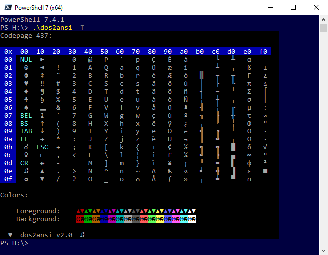

DOS2ANSI(7)
NAME
- dos2ansi –
- convert and view MS-DOS/ANSI.SYS files
DESCRIPTION
dos2ansi is a software package for converting and
and viewing old MS-DOS/ANSI.SYS text files ("ANSI-art"). It consists of two
tools:
- dos2ansi(1):
This is a converter for MS-DOS/ANSI.SYS files, translating them to a
format suitable for a modern terminal. The result uses a Unicode text encoding
and only ANSI SGR escape sequences.
- showansi(1):
This is an ANSI-art viewer, using an X terminal emulator with
configurable fonts, dos2ansi(1) to convert the
input, and a pager to view an ANSI-art file.
Note the manpages linked here were built with default paths.
make install will install manpages to your system
containing paths as configured in your build.
Download and installation
The latest release of dos2ansi is available
from:
https://github.com/Zirias/dos2ansi/releases/latest
To build from source, read the build instructions at:
https://github.com/Zirias/dos2ansi#building
Additional information
- License:
- BSD 2-clause (all rights reserved)
- Source:
- https://github.com/Zirias/dos2ansi
Screenshots

SEE ALSO
dos2ansi(1),
showansi(1)
README: https://github.com/Zirias/dos2ansi
AUTHORS
Felix Palmen <felix@palmen-it.de>